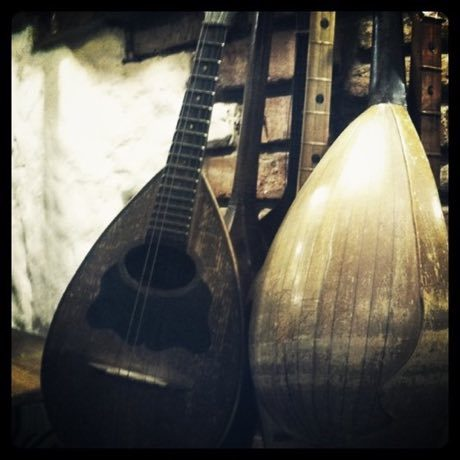

Home / Living Traditions / Persia, Caucasus and Central Asia
Encyclopedia ID 245
Georgian three-voice polyphony
Also known as ქართული მრავალხმიანობა


Georgian three-voice polyphony is a musical instrument tradition from Georgia.
Heritage note
Part of the living heritage of Georgia.
Origins
A living tradition passed from person to person; it is not tied to a single dated origin. It belongs to the cultural world of Persia, Caucasus and Central Asia.
Play it
Sources
Related entries

Khinkali dumpling pleating
Georgia · Crafts and making
Churchkhela
Georgia · Crafts and making
Ikat Pattern Dyeing
Uzbekistan · Crafts and makingPlay preview · in the Textile Crafts of the World app
Santur Hammer Strings
Iran +3 · Musical instruments
Persian Carpet Knotting
Iran +1 · Crafts and makingPlay preview · in the Textile Crafts of the World app
Lavash Baking
Armenia · Crafts and making
More from Georgia

Chidaoba
Georgia · Street and playground games
Chonguri
Georgia · Musical instruments


Lelo Burti
Georgia · Street and playground games